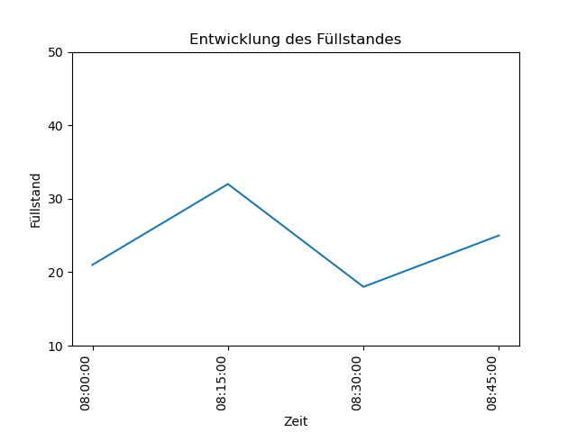

{% extends 'base.html' %}
<script src="https://cdn.bokeh.org/bokeh/release/bokeh-3.0.1.min.js"></script>

<!--

    <h1>{% block title %} Datenraum-Explorer {% endblock %}</h1>


-->
{% block content %}
<p></p>



<p></p>
<p></p>

{%for i in range(0, len)%} 
    <p>{{data[i].id}}: {{data[i].timestamp}} - {{data[i].value}}<p> 
{%endfor%} 

{% endblock %}

<!--
<object type="text/html" data="file:///Users/carin/OneDrive/Desktop/Uni/Bachelor-Arbeit/app/templates/plot.png">
    <p>backup content</p>
</object>


<iframe src = "file:///Users/carin/OneDrive/Desktop/Uni/Bachelor-Arbeit/app/templates/plot.png"></iframe>

-->

